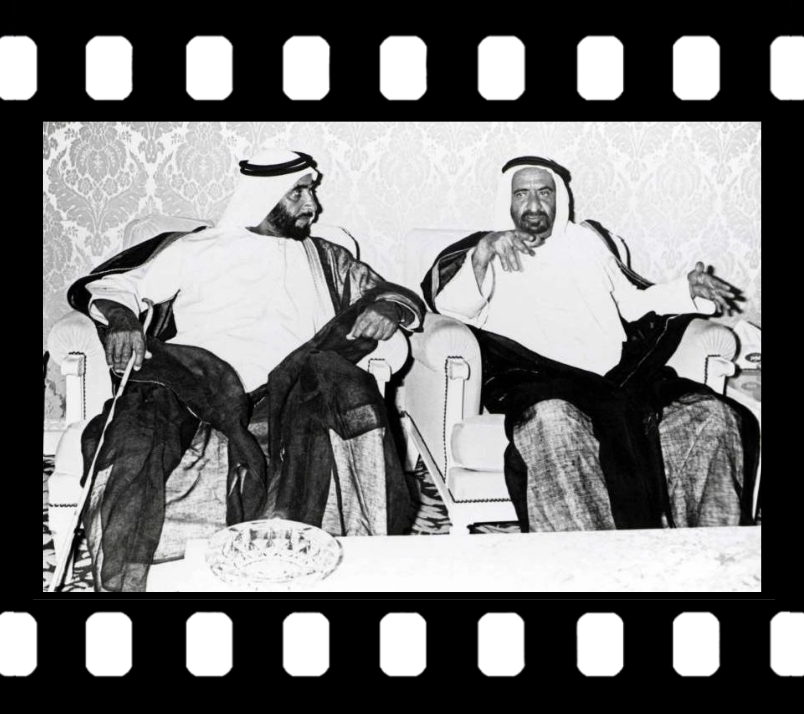
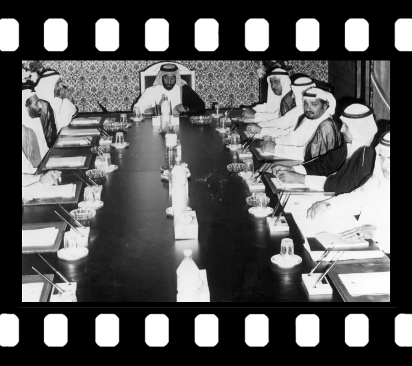
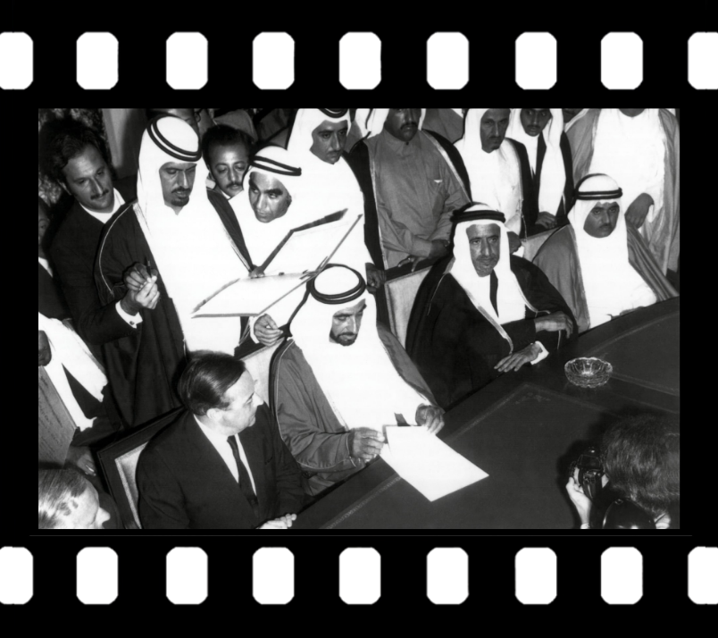
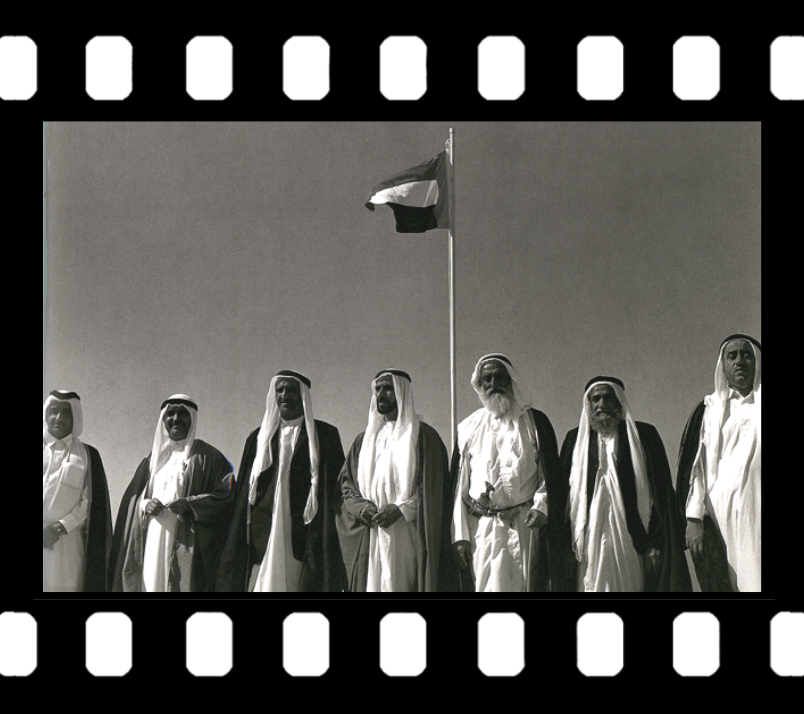

عمل الطالبة :سلمى 10/7
كانت أولى خطوات قيام اتحاد دولة الامارات على يد سمو الشيخ زايد آل نهيان والشيخ راشد آل مكتوم -رحمهما الله- حكام ابوظبي و دبي آنذاك، فقد عقدا اجتماعًا في الثامن عشر من فبراير عام 1968 في منطقة السميح الواقعة على الحدود بين أبوظبي ودبي، ليتم التوقيع على اتفاقية تجمع إمارتي أبوظبي ودبي عُرفت بـ “اتفاقية الاتحاد ,نصّت الاتفاقية على دمج الإمارتين في اتحاد واحد، والمشاركة معاً في أداء الشؤون الخارجية والدفاع والأمن والخدمات الاجتماعية

أبدى كل من الشيخ زايد والشيخ راشد -رحمهما الله-، رغبتهما في تعزيز الاتحاد واهتمامهما في تقويمه، لذا قاما بدعوة حكام كل من إمارة الشارقة وعجمان وأم القيوين والفجيرة ورأس الخيمة، إضافة إلى البحرين وقطر للمشاركة في مفاوضات تكوين الاتحاد, تم عقد مؤتمر دستوري في 25 فبراير من عام 1968، واستمرت الاجتماعات لمدة 3 سنوات ما بين مفاوضات ومناقشات ومحاولات قيام الاتحاد في دولة الامارات.

في عام 1971، أعلنت قطر والبحرين استقلالهما وسيادتهما على أراضيهما، إلا أن ذلك لم يوقف مساعي الاتحاد، فقد عملت الإمارات السبع بعدها على وضع بديلٍ لاتحاد الإمارات وتعديل نصّ الدستور السابق لإمارات الخليج التسع، وفي اجتماع دبي الثاني، قرر حكام الإمارات الست؛ وهم: أبوظبي ودبي والشارقة وعجمان وأم القيوين والفجيرة، تكوين الإمارات العربية المتحدة وتحديد تاريخ اتحاد الامارات، أما إمارة رأس الخيمة فقد كانت في حالة من التردد.

تم إعلان قيام اتحاد دولة الإمارات العربية المتحدة وتأسيس دولة مستقلة في 2 ديسمبر 1971، وإعلان سريان مفعول الدستور المؤقت وانضمام كل من أبوظبي ودبي والشارقة وعجمان والفجيرة وأم القيوين. أما رأس الخيمة فقد انضمت إلى اتحاد دولة الإمارات العربية المتحدة في 10 فبراير 1972، ليصبح الاتحاد كاملاً ويشمل الإمارات السبع.
